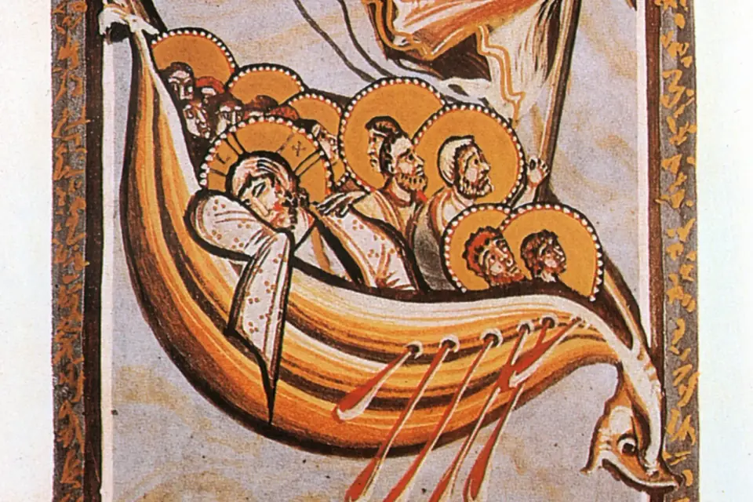
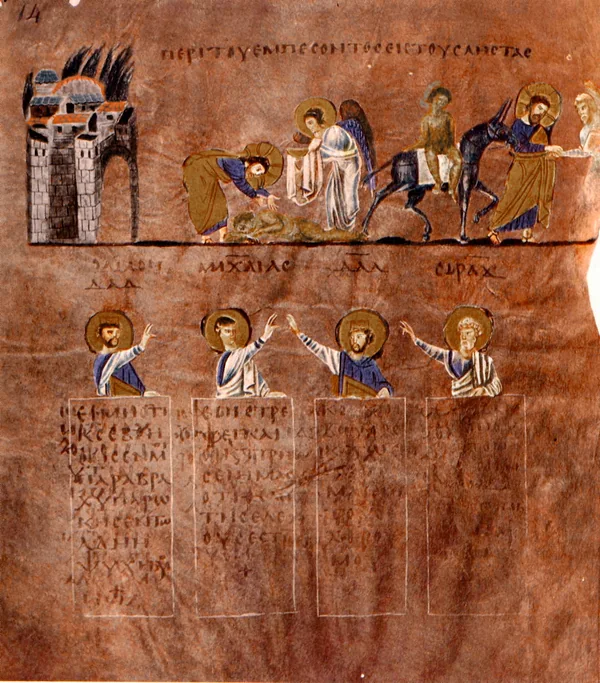
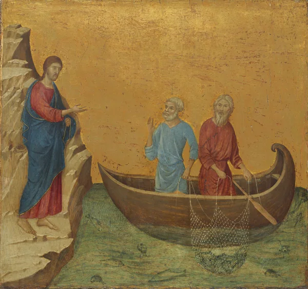
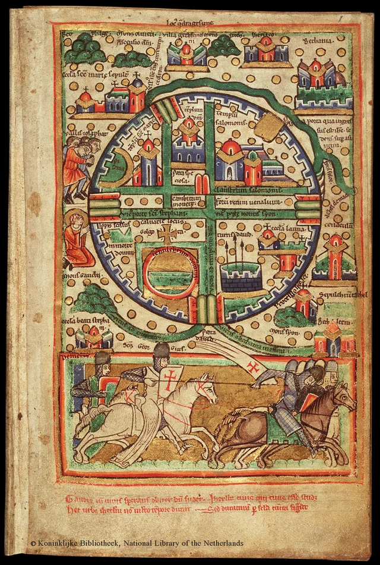
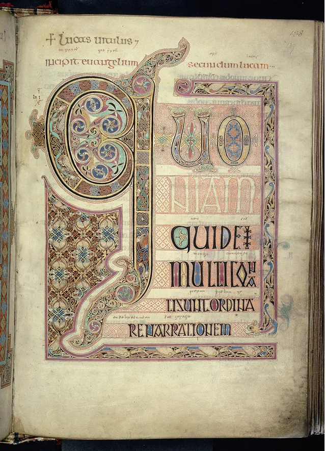
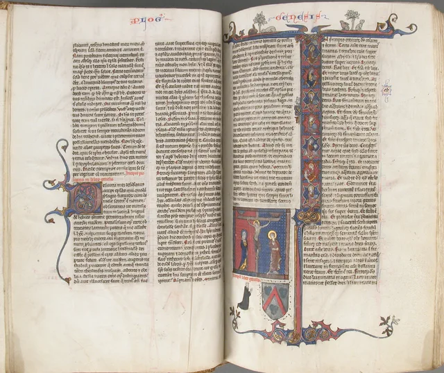

Parágrafo de leitura em Newsreader, com entrelinha confortável e largura limitada.
Intertítulo
A tempestade era real. Mas Jesus também estava no barco.
Uma comunidade de fé de portas abertas para você e sua família viverem mais perto de Deus.
Uma ação principal por bloco.
Primeiro o celular. Sempre a leitura.
Contraste e foco fazem parte.
Movimento finito. Atmosferas pausáveis.
01 / TIPOGRAFIA
Opção A: papéis rígidos e escala única. Esta regra substitui as decisões anteriores sobre famílias e pesos. Toda página usa os mesmos tokens e componentes.
Títulos de seção em 800; títulos de card em 600. Horários, porcentagens e números de destaque em 800, com tabular-nums.
Outfit Kemuel Static 800 é o derivado com contornos unidos, exclusivo do lettering vazado.
Texto curto e apoio em 400. Botões, menus, campos, metadados, rótulos e legendas em 600.
Leitura longa e páginas da Bíblia em 400. Versículos grandes em 300; citações curtas e destaques em itálico 400. Peso 600 exclusivo dos títulos de post.
Cada tamanho vem de um dos dez tokens --text-* em :root. Entrelinha 1,6 no texto, 1,25 nos títulos médios e 1,1 nos grandes (1,05 na hero). Medidas abaixo calculadas ao vivo; nenhuma página define fonte própria.
Uma legenda continua legível.
Texto curto para orientar.
Uma comunidade de fé de portas abertas.
Clareza para chegar com tranquilidade.
Bem-vindo.
Rótulo único · Public Sans 600 · caption · 0,14em
Apoio de seção em Public Sans 400 / body-lg.
Uma citação curta usa Newsreader itálico 400.
Título de post em Newsreader 600.
Categorias, rótulos de ficha, legendas de imagem e Nº 01 seguem exatamente o mesmo papel de rótulo, variando apenas a cor.
Uma citação em itálico continua sendo voz de leitura; o destaque em itálico é uma ênfase no título. O peso dos destaques continua Newsreader 400. As exceções preservam os papéis editoriais das páginas de post e da Bíblia.
A palavra decorativa KEMUEL da malha usa --text-display e escala geométrica do cenário para preservar a composição; não cria um novo tamanho de leitura. Textos, botões e horários da hero continuam fora da água.
Três famílias sob SIL OFL 1.1, com font-display: swap, sem síntese de peso ou itálico. Outfit e Public Sans têm eixos reduzidos aos intervalos usados; Newsreader normal 300–600 e itálica estática 400. A interpolação do arquivo variável não autoriza pesos intermediários no CSS.
Arquivos, eixos, tamanho e SHA-256 em assets/fonts/fontes.json; licenças ao lado. Cinco arquivos WOFF2, incluindo o derivado estático da Outfit. Histórico original preservado somente nos relatórios locais.
02 / CORES
Vermelho em ações principais, marcadores e estados. Branco é a base; preto organiza os destaques. Verde e âmbar são exclusivos de feedback, sempre acompanhados de texto.
Média de 161 pixels internos do círculo: RGB 234,8323 / 48,6398 / 59,6149; arredondado #EB313C. Branco nessa amostra: 4,17:1, abaixo de AA para texto normal.
O fator uniforme 0,947 nos canais sRGB resulta em #DE2E38, com 4,61:1. Ajuste somente para legibilidade. Substituir --color-red quando o código oficial chegar. A imagem de referência não integra o site.
Referência local: referencias/marca-kemuel/logo-referencia.jfif, 447 × 447px. Região do círculo: x 51–108, y 170–223; seleção cromática erodida em 2px para afastar bordas. O print JPEG limita a precisão da amostra.
--color-primary e --color-accent apontam para --color-red. --color-surface e --color-on-dark usam branco; texto principal usa #171717. Texto secundário usa #555555 no claro e #C5C5C5 no escuro. --color-focus usa o vermelho no claro; sobre escuro, o contorno é branco.
Hover: #C1232C. Ativo: #A51D25. Desabilitado: texto #595959 sobre #E5E5E5, sem reduzir opacidade. Bordas de controles usam #767676; #D4D4D4 fica em divisores decorativos. Transparências são superfícies e detalhes, nunca texto com contraste incerto.
Fotos futuras recebem gradiente escuro de no mínimo 60% de preto em toda a área do texto. A amostra usa somente um bloco neutro. Lettering vazado é reservado à hero; seu contorno é branco sobre preto, com alternativa sólida em modo de alto contraste.
Luminância relativa sRGB: (L maior + 0,05) / (L menor + 0,05). Todas as combinações são avaliadas para texto normal: AA ≥ 4,5:1; AAA ≥ 7:1. Os valores vêm dos tokens em uso, sem arredondar antes da classificação.
| Aplicação | Texto / fundo | Contraste | Resultado |
|---|
As demais cores servem a bordas, luzes ou superfícies. Usar somente as combinações textuais desta matriz. Ícones informativos e foco precisam de pelo menos 3:1; o sistema usa contornos de controles com contraste de 4,54:1 no branco.
03 / COMPONENTES
Componentes preparados para as três fases do site. Os estados abaixo são amostras visuais; o hover e o foco reais também funcionam. Nenhum exemplo envia dados ou acessa serviços externos.
Componente · k-hero-led
A demonstração no topo e o index.html usam exatamente a mesma marcação, os mesmos tokens e os mesmos componentes. A palavra KEMUEL é tipografia decorativa em Outfit, não o logo. Dentro da hero não há logo nem repetição do nome: o logo fica só no cabeçalho.
Camadas: atmosfera existente → bordas em nuvem → máscara de pontos → cruz, palavra cinza e luz de vitral em CSS, recortadas pela malha → véu leve de 15% → sombra radial localizada atrás do texto → título, subtítulo e ações. A palavra usa até 88vw (KEMUEL mede 4,005em) e fica no fundo, atrás do conteúdo centralizado. Pontos fluidos: raio de 1,2px no celular e 0,8px no desktop; passo de 4px e 3px. Luz de vitral: dois feixes diagonais âmbar (12s e 14s, defasados) e uma mancha de leve tom vermelho (12s) deslizam e mudam de intensidade; no celular, um feixe só. Cruz de luz genérica, com hastes alinhadas, diferente da cruz do logo, atrás da palavra e levemente acima do centro, respirando em 8s. Os pontos acendem por onde a luz passa e voltam ao cinza. A palavra respira de 0,8 a 1 de opacidade em 6s. O token --hero-led-amber é restrito a esta atmosfera: não é cor de interface, botão ou texto, e o vermelho continua sendo o único acento. Desfoque estático. Só transform e opacity animam, sempre em linear. Com mouse, a malha ondula ao redor do cursor, como água mexida: passe o ponteiro na demonstração no topo. Sem WebGL, canvas, bibliotecas, imagens ou scripts externos.
Sem eyebrow. Ações: "Como chegar", primária, e "Cursos e materiais gratuitos", secundária; no celular, uma embaixo da outra, em largura total. "Planeje sua visita" fica só no cabeçalho. Reutiliza k-container, k-lettering (Outfit Kemuel Static 800 sem costuras), k-button, k-button--secondary, k-enter e a atmosfera da hero. Cores, fontes, espaços, raios, easing e durações de interface vêm do sistema. Geometria, malha, máscaras e transparências específicas usam os tokens --hero-led-* em tokens.css.
Contraste medido nos pixels atrás do texto, com a luz em seis pontos do ciclo e também com fundo totalmente branco, simulando o vídeo, incluindo 568 × 320: título a partir de 5,82:1; subtítulo #C5C5C5 a partir de 4,82:1, com fundo branco extremo sob a proteção; apoio dos horários a partir de 10,94:1. Primário branco sobre vermelho: 4,61:1 (AA). Se o bloco de texto mudar de tamanho, medir de novo. Não remover a sombra nem aplicar opacidade ao conteúdo.
Filtro SVG (feTurbulence e feDisplacementMap) aplicado só em k-hero-led__mesh, restrito à área ao redor do cursor; título, subtítulo, horários e botões ficam em outra camada e nunca deformam. Tokens: --hero-led-water-scale, -radius, -calm, -frequency, -flow, -flow-period e -gain. requestAnimationFrame só roda enquanto há ondulação; parado, o filtro é retirado e nada é calculado. Só com (hover: hover) and (pointer: fine); desligado com movimento reduzido, aba oculta ou hero fora da tela.
O template inerte contém video autoplay muted loop playsinline preload="metadata", sem áudio. Nenhuma mídia é solicitada no padrão CSS. Após instalar todos os arquivos, adicionar data-video-enabled à section k-hero-led, tanto aqui quanto na página. ui.js resolve os caminhos a partir de assets/, independentemente da página.
assets/video/hero.webm e assets/video/hero.mp4: desktop, 1280px de largura, até 3 MB por arquivo.assets/video/hero-mobile.mp4: abaixo de 768px, 720px de largura, até 1,5 MB.O vídeo substitui a luz e mantém palavra, nuvem, pontos, filtro monocromático e proteção do texto. Só aparece depois de começar a tocar; falha ou bloqueio de autoplay preserva o CSS. IntersectionObserver pausa luz e vídeo fora da tela; aba oculta pausa também. Movimento reduzido mantém palavra e malha estáticas, sem iniciar nem carregar vídeo. Sem IntersectionObserver, o fundo permanece estático.
Regra: movimento contínuo somente nas atmosferas autorizadas: fundo da hero e respiração do brilho da história. Título e ações permanecem legíveis com CSS estático, sem vídeo ou sem JavaScript. Os textos entre colchetes são pendências, não informações reais da igreja.
Componente · k-schedule
Dois blocos lado a lado, ou um embaixo do outro quando cada bloco ficaria abaixo de --schedule-item-min. Cada bloco: ícone k-clock e tracinho vermelho decorativo, dia no estilo k-eyebrow, horário em Outfit (--text-schedule-time) no formato brasileiro, como 19h30 ou 18h, e rótulo. Os horários vêm de dados/igreja.json, preenchidos pelo script de montagem. O vermelho fica só no tracinho, conforme a regra da cor. Use apenas horários confirmados e não invente nomes de culto.
Variante clara · k-schedule
Variante escura · k-schedule--dark
Contraste: texto #171717 e apoio #555555 sobre branco; branco e apoio #C5C5C5 sobre #111111. Todos acima de AA.
Componente · k-article
Página de post no estilo de leitura dos grandes jornais: fundo branco, cabeçalho sólido, coluna centralizada de cerca de 65 caracteres (--article-measure). Ordem: categoria em cinza; título em Newsreader 600 com text-wrap: balance; subtítulo em Public Sans 400 / body-lg, cinza escuro; linha de autoria em Public Sans; capa um pouco mais larga que a coluna, sem cantos, com legenda e crédito; texto em Newsreader 400 (body-lg fluido, entrelinha 1,6); intertítulos em Outfit 800 / h3; citação em itálico entre linhas finas, sem cor; imagens internas na largura da coluna; referência bíblica discreta; no fim, Compartilhar (copiar link e WhatsApp, como texto) e Leia também (categoria e título). Barra de progresso de 2 px no topo, único vermelho da área do post. Sem animação de entrada, botão flutuante, papel ou ícones decorativos. Tokens em --article-*.
Fluxo: rascunho em textos-blog/ (privado) → node scripts/converter-post.mjs → conteudo/blog/[slug].md → node scripts/montar-paginas.mjs → blog/[slug].html e dados/posts.json.
Este é um texto de exemplo para mostrar como o blog vai funcionar.
Fé
Há dias em que a gente ora e o vento continua forte. Uma noite no mar da Galileia mostra onde fica a nossa paz.

Parágrafo de leitura em Newsreader, com entrelinha confortável e largura limitada.
A tempestade era real. Mas Jesus também estava no barco.
Texto base: Marcos 4.35-41
Componente · k-collage-cover
Só nas listas (nunca na página do post, onde a capa é limpa). Papel quente com grão, imagem recortada em arco (--arch) ou papel rasgado (--torn), círculo vermelho e bloco cinza quente ou preto (--dark) sobrepostos, etiqueta de categoria e selo EXEMPLO. Imagens apenas de acervos livres, nunca geradas por IA. Tokens em --collage-*.
Componentes · k-blog-header, k-blog-filter, k-blog-note e k-blog-card
k-blog-header, filtros e contador preservam o cabeçalho existente. k-blog-card agora usa k-blog-cover, variante limpa de imagem, sem círculo, blocos, moldura, recorte ornamental ou filtro de cor. A colagem continua apenas como componente independente na demonstração acima; não é necessária para este card. O portal /blog usa k-blog-feature e k-blog-list-item, que não foram redesenhados.
Acima de 760px, grade em quatro trilhas: o mais recente ocupa as duas da esquerda e duas linhas (imagem 4/5); os quatro restantes ficam em 2×2, com imagem 4/3. Até 760px, uma coluna e todas as imagens 4/3. Etiqueta única Public Sans/caption, branca com texto preto, no canto superior esquerdo e sem quebra. Exemplo aparece só nos metadados cinza, condicionado à flag do front matter. Título Outfit 600/h5, destaque h3; resumo limitado a três linhas; tempo de leitura em elemento próprio, nunca truncado.
Hover somente na imagem: scale(1.03), 500ms e easing único. Link, texto, etiqueta e card não se movem; foco continua visível. Em dispositivos de toque ou com prefers-reduced-motion, não há zoom. Filtros conservam contagens/aria-pressed/aviso e ordenação por data decrescente; o primeiro resultado visível assume o destaque, e resultados filtrados usam 4/3. A ordem dos temas no cabeçalho permanece igual.
Originais locais licenciados: 1401×1594 a 3840×3602px; nenhuma imagem nova baixada ou gerada por IA. WebPs de 600/900/1400px de largura, sem ampliar pixels e sem recortar o arquivo original; o enquadramento 4/3 ou 4/5 acontece apenas por object-fit: cover. Dados/posts.json é gerado do front matter pelo mesmo catálogo da montagem, incluindo as novas versões de capa; não editar à mão. Créditos, dimensões e hashes estão em dados/creditos-imagens.json. O conversor passa a gerar os mesmos arquivos para posts futuros.
Srcset usa larguras reais dos arquivos, sizes auto para lazy loading com fallback que acompanha container/gutter/gap e as quatro trilhas da grade. Tokens novos em --blog-* para proporções, radius (alias), rótulo, zoom e duração; famílias e cores vêm do sistema. Newsreader itálica continua restrita à expressão do título do cabeçalho, preparada perto da seção. Sem JavaScript, as cinco reflexões continuam em ordem e disponíveis.
05Reflexões para começarEscolha um tema e leia em poucos minutos

Amor ao próximoUm especialista na lei quis uma definição. Jesus respondeu com uma história que ainda tira a gente do lugar.
2 min de leitura
ChamadoJesus chamou pescadores no meio do expediente. O chamado de Deus costuma chegar assim, no meio da vida comum.
2 min de leitura Escrituras
EscriturasUma descoberta feita por pastores no deserto ajudou a mostrar o cuidado com que a Bíblia foi copiada ao longo dos séculos.
2 min de leitura Palavra
PalavraA Bíblia não promete iluminar a estrada inteira de uma vez. Ela ilumina o próximo passo, e isso já é muito.
2 min de leitura Fé
FéHá dias em que a gente ora e o vento continua forte. Uma noite no mar da Galileia mostra onde fica a nossa paz.
2 min de leituraPortal do blog
k-verse, k-blog-search, k-blog-feature, k-blog-list-item e k-blog-sidebar usam os tokens --blog-*. A busca própria, sem biblioteca, fica em blog-search.js e search.mjs, apenas no portal (e nesta demonstração). k-search-suggest: combobox/listbox com até cinco artigos, setas, Enter e Esc; itens em breve são anunciados e não abrem. k-mood-picker: atalhos por temas, omitidos se não houver artigo. k-search-empty: correção sugerida, categorias, três recomendados e conversa com WhatsApp de exemplo.
Montagem gera dados/busca.json: campos normalizados e texto sem HTML dos artigos publicados, com cópia original só para exibir trechos. Índice, sinônimos e 66 livros carregam apenas na primeira interação ou ao restaurar uma busca pelo hash. Dados públicos autorizados em .vercelignore; dados da igreja e demais arquivos de trabalho continuam fora do deploy. Manter 2 a 4 temas por post e sinônimos em dados/sinonimos.json. Título tem peso 12, temas/referência 8, categoria 6, resumo 4, texto 1. Prefixos; uma edição em 4–6 letras, duas em mais de 6. Busca por livro/capítulo e intervalo de versículos; Jo é ambíguo entre João e Jó, Jó acentuado é específico.
Tokens --search-*; debounce de 120ms, sem movimento novo. Destaque com texto escuro sobre cinza claro e foco do sistema. Sem resultado não inventa artigos; o catálogo atual não contém João 3, Salmo 23 ou 1 Coríntios 13. Sem JS ou em falha da rede, os quinze itens estáticos continuam disponíveis. Nenhuma busca é enviada ao servidor ou registrada.
Blog da Igreja Kemuel
Porque o Senhor dá a sabedoria, e da sua boca vem o conhecimento e o entendimento.
Busque por tema, personagem ou passagem.
15 artigos
Jo pode indicar João ou Jó. Procure pelo nome completo para escolher um deles.
Não encontrou o que procurava? Às vezes uma conversa ajuda mais do que um texto.
Falar com alguém da igreja (link de exemplo, abre em nova aba)[Número oficial do WhatsApp] · link de exemplo

Amor ao próximo
Um especialista na lei quis uma definição. Jesus respondeu com uma história que ainda tira a gente do lugar.
2 de nov. de 2026 · 2 min de leitura

Chamado
Jesus chamou pescadores no meio do expediente. O chamado de Deus costuma chegar assim, no meio da vida comum.
26 de out. de 2026 · 2 min de leitura

Escrituras
Uma descoberta feita por pastores no deserto ajudou a mostrar o cuidado com que a Bíblia foi copiada ao longo dos séculos.
19 de out. de 2026 · 2 min de leitura

Palavra
A Bíblia não promete iluminar a estrada inteira de uma vez. Ela ilumina o próximo passo, e isso já é muito.
12 de out. de 2026 · 2 min de leitura

Fé
Há dias em que a gente ora e o vento continua forte. Uma noite no mar da Galileia mostra onde fica a nossa paz.
5 de out. de 2026 · 2 min de leitura

Antigo Testamento Em breve
Diante de um gigante, Davi aprendeu a confiar em Deus. Uma história para lembrar onde está a nossa coragem.
1 Samuel 17

Antigo Testamento Em breve
Noé construiu a arca enquanto esperava. Uma reflexão sobre confiança, cuidado e as promessas de Deus.
Gênesis 6 a 9

Fé Em breve
Abraão saiu sem conhecer o destino. A fé também pode começar com um passo pequeno e um coração disposto.
Gênesis 12

Antigo Testamento Em breve
A história de José passa pela dor e chega ao reencontro. Um convite para pensar no perdão sem apagar o que aconteceu.
Gênesis 37 a 50

Fé Em breve
Entre o medo e o mar, o povo deu o próximo passo. Uma lembrança de que Deus cuida mesmo quando não vemos saída.
Êxodo 14

Amor ao próximo Em breve
Rute escolheu ficar ao lado de Noemi. Sua lealdade mostra como o amor pode abrir caminhos em dias difíceis.
Rute 1 a 4

Chamado Em breve
Neemias viu ruínas e começou com oração. Uma história sobre reconstruir juntos e cuidar do que Deus nos confiou.
Neemias 1 a 6

Palavra Em breve
Cansado e com medo, Elias precisou parar. Uma reflexão sobre escutar Deus também nos momentos de silêncio.
1 Reis 19

Fé Em breve
Daniel continuou a orar quando parecia arriscado. Uma história para fortalecer a fidelidade nas escolhas de cada dia.
Daniel 6

Chamado Em breve
Jonas tomou outro caminho, mas Deus não desistiu dele. Uma reflexão sobre recomeço, obediência e misericórdia.
Jonas 1 a 4
História · capítulos manuais
k-timeline organiza a história em duas colunas 55/45 acima de 760px: painel completo sticky à esquerda e cards com resumo de até duas linhas à direita. k-timeline-panel reúne rótulo cinza com marcador vermelho, título Outfit 600, prosa Newsreader 400 (18–19px, entrelinha 1,6, até 60ch) e ilustração. Base Outfit/Public Sans; Newsreader só como voz de leitura, sem títulos em itálico. Experimentar os capítulos.
Abas no computador: lista com role=tablist e orientação vertical, botão com role=tab, aria-selected, aria-controls e foco móvel. Setas (incluindo esquerda/direita), Home e End movem o foco; Enter/Espaço ou clique ativam. Só o painel ativo tem role=tabpanel visível, ligado ao botão e acessível por Tab. “Ler capítulo →” faz parte do mesmo botão de seleção, sem link aninhado. O card ativo mantém fundo e marcador do sistema.
Até 760px, o painel esquerdo é omitido e o mesmo conteúdo entra no card ativo: ilustração acima da prosa, apenas um aberto. O padrão muda para botões de acordeão com aria-expanded/aria-controls e regiões associadas, sem misturar estados de abas e acordeão. Redimensionar preserva o capítulo e não reinicia sua cena. Sem JavaScript, todos os textos continuam disponíveis, sem duplicação, e o palco é omitido.
Fonte única da dobra em partials/timeline.html, aplicada aos marcadores timeline na home e no manual por scripts/montar-paginas.mjs. SVGs permanecem em partials/story-scenes.html, nos marcadores internos; não editar os blocos gerados. A lista aceita de 3 a 6 capítulos, com IDs únicos por instância. Datas da fundação permanecem [ANO]; a visão foi copiada integralmente da lição 10, página 56; os sete princípios vêm da página 59, em três parágrafos; o convite ao serviço sintetiza a lição 9, páginas 52–54. Não usar a história de outra comunidade nem suas doutrinas específicas.
k-story-stage e k-story-scene preservam o palco 4:3, legenda protegida, quatro cenas finitas, malha e brilho. Para foto real futura, instalar o arquivo e só então preencher no li data-story-photo e data-story-alt: mesma malha e tratamento em preto e branco, só zoom de entrada. Nenhum arquivo ausente é solicitado.
Horários nunca são digitados no partial: data-dado="cultos-timeline" preenche o resumo e data-dado="cultos-frase" preenche a linha depois da visão, a partir de dados/igreja.json. Pendências editoriais: história da fundação e confirmação pastoral dos princípios batistas da apostila. O site mantém noindex.
Tokens em --timeline-*: colunas 55/45, breakpoint 760px, leitura 18–19px/60ch, duas linhas de resumo e troca de painel em 400ms com 8px de translateY. Crossfade de saída/entrada simultâneas, usando o easing único cubic-bezier(.22,1,.36,1); o painel que sai fica inerte e oculto para tecnologia assistiva. Cancelamento seguro ao selecionar rapidamente. Cenas e zoom conservam os tempos existentes. Só transform e opacity animam. A fonte de leitura é preparada quando a dobra entra na tela.
A cena e o brilho pausam quando a dobra sai da tela ou a aba fica oculta. prefers-reduced-motion entrega a troca imediata e as cenas paradas. Não há seleção automática. A respiração do brilho continua uma das exceções autorizadas de atmosfera, junto à hero e a k-radiate; nenhum novo loop foi criado.
Ficha editorial · componentes
k-spec-section mantém o papel quente e o container padrão. A partir de 60rem, o painel ocupa cerca de 40% e a ficha cerca de 55%, com intervalo fluido. No celular: introdução, cinco perguntas, WhatsApp e painel centralizado com 70% da largura. Ver a demonstração completa.
k-spec-faq estende k-faq: rótulos Public Sans 600/caption, todos no mesmo cinza; pergunta Outfit 600/h5, à esquerda; resposta Public Sans 400/body, até 60ch. O indicador circular transforma + em −; o item aberto ganha marcador vermelho vertical. Primeira pergunta aberta, alvo mínimo de 48px, foco visível, aria-expanded/aria-controls e operação nativa por Enter/Espaço, mouse e toque. A resposta usa a duração média e o easing único; com movimento reduzido, a troca é imediata.
k-radiate é decorativo (aria-hidden): painel preto quadrado, símbolo existente brand/logo-simbolo.svg com cruz branca, brilho de fundo discreto e três anéis vermelhos finos. O centro das ondas acompanha o anel do SVG original, sem modificar a marca. Cada onda cresce e some em 4,8s, com defasagens de 0/−1,6/−3,2s e o linear já existente de atmosfera, para expansão uniforme. Abrir uma pergunta emite uma onda extra de 1s com o easing único de interface. Só transform e opacity são animados; vector-effect conserva o traço fino.
O loop é uma exceção autorizada, ao lado da atmosfera da hero e da respiração da história. Pausa fora da dobra e com a aba oculta. prefers-reduced-motion deixa três anéis parados, com opacidades 0,3/0,2/0,1; sem JavaScript o mesmo estado estático preserva a decoração e o FAQ continua nativo. Os tokens do novo componente ficam em --faq-*, sem novas famílias ou escala de texto.
Diagnóstico de cor: local e publicado apresentaram os cinco rótulos em #555555 antes da mudança; azul/laranja não foram reproduzidos. A origem agora é explícita em --faq-label-color, aplicada ao rótulo em todos os estados, sem herança de cor do summary. Contraste sobre o grão máximo: rótulos ≥5,95:1; texto ≥14,31:1; eyebrow ≥4,73:1 e botão branco/vermelho ≥4,61:1. A colagem e as etiquetas foram retiradas por não terem outro uso.
Variações · k-card--compact e k-material-strip
k-card--compact: abaixo de 40rem, o card fica horizontal, com imagem pequena à esquerda (--card-compact-thumb) e texto à direita; a partir daí, é o k-card padrão. k-material-strip: lista de materiais com ícone, título, formato e botão; uma coluna no celular e três a partir de 60rem. Regra de lançamento: a dobra "Para sua caminhada" só fica visível com pelo menos 3 posts e 3 materiais reais.
[Data]
O foco pertence ao link; o card sinaliza focus-within. Um card informativo não recebe estado desabilitado artificial.
Cor não é a única informação: todo estado tem uma descrição por escrito.
Rótulo visível, ajuda associada e validação por texto. Em campos, o estado ativo corresponde ao foco de edição. Não há cadastro, coleta nem envio nesta documentação.
Navbar desktop · estrutura prevista, somente demonstração
No site final, a navegação usa páginas aprovadas. A página principal usa a mesma k-hero-led demonstrada no topo; as demais páginas continuam pendentes de aprovação.
Menu mobile · demonstração independente
Componente · cabeçalho
Altura --header-height: 56px no celular e 64px a partir de 70rem. k-header--over, na página principal: transparente e branco sobre a hero; ui.js adiciona is-solid quando a hero sai de trás do cabeçalho, com transição de 140ms no easing único. Sem JavaScript, ou com o menu aberto, permanece sólido. As demais páginas usam direto o k-header sólido. O logo é um SVG interno (k-logo) cuja tinta segue a cor do cabeçalho: branca sobre a hero, preta no sólido, com troca suave de 140ms; o anel usa --color-red. O nome fica só no aria-label do link, pois o logo oficial já o contém. Menu, na ordem: Discipulado, Materiais e cursos, Blog e Contribua, com o botão Planeje sua visita em destaque; no celular, o botão fecha o painel. O logo leva à página inicial. O item da página atual usa aria-current="page", com o estado ativo do sistema, e os itens não quebram linha.
Regra · primeira dobra
Na primeira dobra da página principal ficam sempre visíveis, sem rolar: logo e menu, título, subtítulo, horários dos cultos (k-schedule) e os dois botões. A k-hero-led ocupa 100svh desde o topo, com KEMUEL no fundo. Título e lettering usam min() entre largura e altura da tela; espaços vêm de --hero-led-gap e --hero-led-pad-y. Em telas deitadas e baixas, o conteúdo passa a duas colunas. Toda mudança no texto da hero exige medir de novo.
Estrutura das páginas do site
k-header__cta: botão "Planeje sua visita" no cabeçalho, a partir de 70rem. Abaixo disso, o mesmo destino fica no menu mobile.k-section--black: dobra preta, com k-dark. Quem somos usa esta superfície.k-grid--center: duas colunas alinhadas ao centro, para texto e foto.k-footer--page e k-footer__links: rodapé de largura total, com reserva --whatsapp-clearance para o botão flutuante não cobrir o conteúdo.k-page: compensa o cabeçalho fixo em páginas sem hero.k-footer__social: ícones de redes no rodapé, com alvo mínimo de --touch-min e nome acessível em k-sr-only. Links das redes vêm de dados/igreja.json (data-dado-href), abrem em nova aba e avisam isso ao leitor de tela.Cabeçalho, rodapé, ícones do head, símbolos SVG, WhatsApp flutuante e toast têm código único em partials/, aplicado por node scripts/montar-paginas.mjs antes do commit; não edite os blocos gerados direto nas páginas. O manual compartilha símbolos SVG, WhatsApp e toast, preservando sua navegação própria. O script inclui só os símbolos usados na página, mais o ícone de fechar usado pelo menu em ui.js; o filtro SVG da água permanece dentro da hero. Medidas fixas de componentes também são tokens (--size-*, --icon-*, --touch-min, --control-height e outros), exceto breakpoints, porque @media não aceita var().
O botão flutuante “WhatsApp · exemplo” fica no canto inferior. Seu endereço é reservado para exemplos, sem número real, e o clique é interceptado localmente.
Horários
Preencher somente com horários confirmados.
Endereço
[Endereço da igreja]
[Bairro] · [Cidade / UF]
Contribua · manifesto, projetos e PIX
k-give-manifesto e k-give-reasons usam preto, Outfit 800, Newsreader itálica e paráfrases próprias, com revelação existente. Fotografia histórica licenciada, diferente da face usada em Materiais, com fundo removido; entrada k-give-coin-enter uma vez, 480ms, e inclinação manual até 6°. Sem loop. O brilho quente fica só atrás da moeda, sem virar cor de interface. Fontes preparadas perto da seção.
k-goal-card é um article com botão de seleção expandido sobre o card: aria-pressed, foco visível, hover e estado ativo. Ilustrações SVG próprias em partials/give-*.svg, sem pessoas, com malha derivada da hero. dados/metas.json é a fonte, percentuais calculados pela montagem. EXEMPLO identifica os dados fictícios. mostrar_valores false omite os valores do HTML, mantendo percentuais e aria. k-progress tem 6px, marcas 25/50/75, escala de entrada em 480ms e atrasos 0/140/280ms, uma vez por card, contador acompanha. Sem JavaScript e com movimento reduzido, valores finais visíveis.
k-pix substitui o campo antigo por texto selecionável, cópia com confirmação e seleção do texto se falhar; dados vêm só de dados/igreja.json. QR Code e titular são marcadores. Instrução aria-live e código acompanham a meta; segundo clique desmarca. No desktop o PIX só fixa se couber; no celular vem antes das metas e a seleção rola até ele, sem movimento com prefers-reduced-motion. Novos valores exclusivamente --give-*. Nenhum PIX real ou valor financeiro real foi incluído.
Contribua
Quando você contribui, a igreja abre as portas, sustenta quem serve e alcança quem ainda não conhece Jesus. Não é sobre o tamanho da oferta. É sobre um coração que participa.

Ela deu duas moedinhas. E Jesus disse que ela deu mais do que todos.
Contribuir é dizer a Deus que Ele vem primeiro.
Provérbios 3.9
Deus se agrada de quem dá de coração, não por obrigação.
2 Coríntios 9.7
Na igreja do começo, cada um repartia o que tinha, e ninguém ficava sem.
Atos 2.44-45
Onde estamos investindo
Escolha um projeto ou contribua para a igreja como um todo.
Novos instrumentos para o louvor dos cultos.
R$ 6.400 de R$ 10.000
Salas mais seguras e acolhedoras para as crianças.
R$ 11.400 de R$ 30.000
Mais vagas para quem chega aos cultos.
R$ 9.600 de R$ 80.000
Atualizado em 10/11/2026
Primeira visita
Os cultos acontecem às quintas-feiras, às 19h30, e aos domingos, às 18h.
[Endereço da igreja e orientações de chegada aprovadas.]
[Canal institucional de contato e orientações confirmadas.]
Elemento details/summary nativo. Abre com Enter ou Espaço; o estado permanece compreensível sem JavaScript.
[Resumo do conteúdo, a inserir após revisão.]
[Data] · [Tempo de leitura]
Ler exemploNo futuro, usar somente fotos autorizadas da igreja. Texto branco sobre no mínimo 60% de preto, inclusive na área mais clara da foto.
[Data e horário]
[Local do evento]
Página de leitura · exemplo
[Autor autorizado] · [Data de publicação]
[Parágrafo de abertura. Inserir aqui o conteúdo aprovado, com uma apresentação curta do assunto.]
[Parágrafo de leitura. Este espaço demonstra a largura do texto, a entrelinha e o ritmo entre os blocos. O conteúdo institucional ainda será escrito e revisado.]
[Desenvolvimento do assunto. Manter parágrafos claros, listas quando ajudarem a leitura e links descritivos. Não usar letras de louvor ou textos sem autorização.]
“[Citação autorizada e atribuída.]”
[Continuação do texto e encerramento após revisão editorial.]
Voltar aos componentesDiscipulado · ficha e catálogo
A página usa k-grid--2, k-info-table, k-button e k-faq. A capa k-discipleship-cover tem largura máxima --discipleship-cover-width e sombra suave; no celular vem depois dos botões. A k-lesson-list é uma lista ordenada semântica: número vermelho em Outfit, título em Outfit e subtemas em Public Sans cinza. Sem movimento novo. Os números usam --color-red-hover para AA. O PDF fornecido é preservado; a revisão da versão de exemplo continua pendente.
Atraído pelo Criador · O que devo fazer agora?
k-materials-header usa Outfit 800 em duas linhas, com recuo na segunda; k-material-card e k-cover-title compõem a capa editorial, sem bordas/cantos arredondados, com foto natural e degradê de proteção. Título da capa em Newsreader itálico 400 branco; título abaixo em Outfit 600 / h5, caixa natural. Catálogo único em dados/materiais.json: item 01 real preservado, cinco exemplos, curso externo marcado. Clique em exemplo exibe o aviso exato do sistema. Hover somente scale 1.03, easing único/260ms, desligado com movimento reduzido. Tokens próprios --materials-*, fundo cinza-pedra distinto do papel do blog. Inicial: três capas desencontradas e faixa scroll-snap no celular; página: grade, filtros em texto e curso na âncora #cursos. A imagem medieval de Jerusalém é ilustrativa, não reconstituição do século I. Créditos individuais expansíveis.
Materiais
Guias, estudos e planos de leitura gratuitos para baixar, imprimir e compartilhar.
Ver todos os materiais6 materiais
 discipulado
discipuladoGUIA · Nº 01
Dez lições sobre as bases da fé cristã, para novos na fé.
Baixar PDFPDF · 835 KBCapa da apostila fornecida pela igreja. Versão de exemplo, revisão pendente.
 evangelhosExemplo
evangelhosExemploPLANO DE LEITURA · Nº 02
Um roteiro diário para ler Mateus, Marcos, Lucas e João em um mês.
Baixar PDFPDFBíblia de Gutenberg, Gênesis, exemplar da Staatsbibliothek zu Berlin, c. 1455. Domínio público (PD-Art), via Wikimedia Commons.
 generosidadeExemplo
generosidadeExemploESTUDO · Nº 03
Um estudo sobre generosidade, da oferta da viúva aos dias de hoje.
Baixar PDFPDFPrutah de bronze de Agrippa I, século I, BnF, AA.GR.12966, fotografia da face com três espigas. Domínio público, via Wikimedia Commons.

jerusalémExemploESTUDO · Nº 04
Como era a cidade onde Jesus ensinou, morreu e ressuscitou.
Baixar PDFPDFMapa de Jerusalém c. 1200, KB 76 F 5. Koninklijke Bibliotheek. Domínio público (PD-Art), via Wikimedia Commons. Imagem medieval, não reconstituição da cidade do século I.

oraçãoExemploDEVOCIONAL · Nº 05
Sete dias para criar o hábito de orar, com um tema por dia.
Baixar PDFPDFEvangeliário de Lindisfarne, fol. 139r, c. 700–720. British Library, Cotton MS Nero D.iv. Domínio público (PD-Art), via Wikimedia Commons.

fundamentosExemploCURSO · Nº 06
Os pilares da fé cristã, em aulas curtas na plataforma de cursos.
Acessar cursoCurso externoBíblia francesa, c. 1250–1275, The Metropolitan Museum of Art, 1997.320. CC0 / Met Open Access. Imagem da página oficial da coleção 466297.
3 materiais de exemplo
[Descrição curta do PDF público.]
PDF · [Tamanho do arquivo]
[Descrição curta do PDF público.]
PDF · [Tamanho do arquivo]
[Descrição curta do PDF público.]
PDF · [Tamanho do arquivo]
Chips e select mantêm a mesma seleção. Um download real só será ligado a um PDF público aprovado.
[Descrição aprovada do curso e da plataforma.]
[Condição de acesso a definir]
Acessar curso · exemploO componente informa o destino externo antes do clique. Login, pagamento e aulas pertencem à plataforma que ainda será definida.
O endereço example.invalid é reservado a exemplos e não abre um serviço real.
Superfície clara
Conteúdo principal em branco. Uma hierarquia simples conduz a próxima ação.
Superfície escura
Preto destaca uma mensagem. O vermelho ocupa a ação, sem virar fundo de seção.
PRIMEIRA VISITA
Separamos as dúvidas mais comuns de quem vem pela primeira vez.
O culto dura cerca de [duração]. Tem [momentos do culto, ex.: louvor, oração e pregação].
[Ex.: Venha como se sentir bem. Não existe roupa certa.]
[Sim / Temos [nome do ministério infantil] durante o culto para crianças de [idade].]
[Ex.: Não. Você pode só participar. Se quiser, nossa equipe de recepção te recebe na entrada.]
[Orientação de estacionamento.]
WhatsApp · link de exemplo, sem número real
Componentes · k-service-times, k-bible e k-bible-page
k-service-times coloca os dois cultos acima do livro em texto estático, visível sem JavaScript e independente da animação. Dia Public Sans 600/caption, caixa alta e tracking único; horário Outfit 800, clamp de 48–88px, marcador vermelho discreto. Duas colunas desde 360px; abaixo disso, empilha. Endereço e link interno para #como-chegar logo abaixo.
k-editorial conserva o papel e grid do sistema (200px desktop, 25vw mobile), com traço preto a 4% para manter o contraste. Mesmo no cruzamento, apoio #555555 ≥5,16:1 e links no vermelho ativo ≥5,19:1. Nas folhas, apoio ≥5,82:1 e números pequenos de verso no vermelho hover ≥4,63:1, incluindo sombra de 8%. Botões branco/vermelho: 4,61:1. Título Outfit 800/h2, com um único destaque Newsreader itálico 400 e ponto vermelho. A Bíblia é uma das exceções autorizadas à combinação de acento itálico e voz de leitura. Nenhuma família nova, fonte externa, imagem pesada ou biblioteca.
k-bible usa livro de proporção 1.78, meias capas escuras com costura tracejada, corte vermelho, lombada, capa de duas faces e fita. A folha tem frente e verso reais: página 2 na frente, 3 atrás; 1 e 4 ficam embaixo. Sombra com pointer-events:none e controles separados da fita por --bible-control-clearance. Capa e cruz genérica são decoração; a cruz não é o logo. Protótipo próprio aprovado reconstruído com classes e tokens Kemuel, sem faixa Prévia nem cólofon.
k-bible-page usa container-type:inline-size e tokens com cqw: cabeçalho corrido, numerais Outfit 800, duas colunas Newsreader 400 justificadas, números de verso e referências cf. Todos os dados de cidade, endereço e cultos são preenchidos a partir de dados/igreja.json. Sem nomes inventados de cultos. Os textos do protótipo foram transcritos em UTF-8; os marcadores continuam visíveis e as afirmações de acolhimento precisam de aprovação antes do lançamento. Nenhuma citação bíblica longa.
As quatro páginas têm uma só fonte HTML em partials/bible-visit.html, aplicada na home e nesta demonstração. O JavaScript move os mesmos elementos entre a folha 3D e o carrossel até 760px. Carrossel com scroll-snap, quatro indicadores com área de toque do sistema, setas, arraste e Repetir abertura; sem troca automática. Navegação por teclado restrita ao componente. Textos impressos são decorativos (aria-hidden); controles e botão de rota permanecem acessíveis, com foco visível e anúncio discreto da página atual. Informações essenciais estão em texto real fora do livro.
Movimento finito, somente transform e opacity, easing cubic-bezier(.22,1,.36,1): capa/volume 480ms ao entrar na tela; revelação do miolo 260ms após 140ms; fita balança uma vez em 480ms ao terminar a abertura; folha manual 480ms. A proporção reserva o espaço desde o início; montagem 3D/carrossel a 300px da tela, e diagramação do miolo suspensa fora dela por content-visibility. Animações pausam fora da tela ou com aba oculta. Movimento reduzido: livro já aberto e estático, troca imediata e carrossel sem rolagem animada. Sem JavaScript, páginas disponíveis, controles ocultos e link externo de mapa utilizável. Arraste não seleciona o texto decorativo.
k-visit-map fica abaixo do livro, com endereço, horários e Abrir no Google Maps. O iframe de 420px (320px mobile) tem título acessível, loading=lazy e só recebe a URL ao chegar a 300px da tela. A URL é gerada dos dados do endereço, omitindo [número] da consulta. Até o número ser confirmado, o mapa indica a avenida/bairro; conferir a localização exata antes do lançamento. Sem JS ou observador, permanece o link externo. A CSP permite somente https://www.google.com como origem de frame na home/manual.
Tokens --bible-* reúnem geometria, diagramação cqw, proporções, mapa e movimento. Cores, fontes, espaçamentos, raios, sombras e easing são aliases dos tokens existentes. Newsreader local OFL, normal 400 e itálico 400; nenhuma fonte do Google é requisitada. A família é preparada quando a seção entra na tela; os cultos nunca aguardam isso.
Experimentar os três componentes abaixoVenha nos visitar
Duas noites por semana, em Iguatu. Venha como está e fique como família.
Av. Dr. José Holanda Montenegro, [número] · Centro · Iguatu - CE
Como chegarPáginas 1 e 2 de 4
Use as setas, arraste ou toque nos controles para explorar as páginas.
Como chegar
Av. Dr. José Holanda Montenegro, [número] · Centro · Iguatu - CE
Quinta-feira, 19h30 · Domingo, 18h
Abrir no Google Maps (abre em nova aba)Número do endereço a confirmar. A localização no mapa usa a avenida e o bairro.
NOSSA HISTÓRIA
Capítulo 01 · Como tudo começou
[História da fundação: ano, quem começou, onde aconteciam os primeiros encontros e como a igreja chegou à Av. Dr. José Holanda Montenegro. Aguardando dados do pastor.]
Capítulo 02 · No que cremos
A Bíblia é a nossa única regra de fé e prática. Entendemos a igreja como uma comunidade formada por pessoas regeneradas e batizadas por imersão, que vivem a fé em Jesus Cristo.
A igreja local é autônoma e tem governo democrático. Reconhecemos a competência de cada alma diante de Deus, com liberdade de consciência religiosa, e defendemos a separação entre igreja e Estado.
Cremos no sacerdócio universal dos crentes: cada pessoa pode se aproximar de Deus e participar do serviço cristão. Caminhamos em cooperação com outras igrejas de mesma fé e ordem, somando esforços na missão.
Capítulo 03 · Quem somos hoje
“Somos uma igreja bíblica, acolhedora, contemporânea, presente na cidade, evangelística. Queremos levar o evangelho da salvação às famílias perdidas e a mensagem de consolo aos cansados e oprimidos. E, como parte da Igreja de Cristo, vê-la restaurada em toda a sua plenitude, sob a autoridade do Espírito Santo, nestes tempos proféticos…”
Hoje nos reunimos às quintas-feiras, às 19h30, e aos domingos, às 18h.
Capítulo 04 · O próximo capítulo
Na Kemuel, há lugar para servir como membro, voluntário, líder, obreiro e pastor, conforme os dons e o chamado de cada pessoa, com preparo e acompanhamento da igreja. Esse caminho começa no Discipulado: aprender a fé, crescer em comunidade e descobrir como servir a Deus servindo pessoas.
Use as setas para escolher um capítulo. Pressione Enter ou Espaço para ler.
04 / LAYOUT & ESPAÇAMENTO
Container de até 1280px. Margens laterais de 20px a 64px. Leitura limitada a 65ch. Seções com 72px a 128px de respiro, sem espaços arbitrários entre os blocos.
Todos fluidos com clamp(). Raio pequeno 6px, médio 12px e grande 20px; pill só em chips e pequenos indicadores. Sombra suave em elevação, sem brilhos.
Abaixo de 640px: uma coluna. A partir de 640px: duas. A partir de 960px: três ou quatro, conforme o padrão. Nenhum card tem largura fixa que ultrapasse a tela.
Padrão 01
Hero → informações essenciais → próximos passos.
Padrão 02
Título → leitura em 65ch → conteúdos relacionados.
Padrão 03
Introdução → categorias → grid de materiais.
05 / ÍCONES
SVGs originais de 24 × 24 unidades, traço de 1,7, pontas arredondadas e currentColor. Sem biblioteca de ícones. Fonte canônica em icons/kemuel.svg, licença MIT ao lado.
Logo
Aproximação provisória, redesenhada em contornos a partir das referências até o arquivo original aparecer; aprovação visual do Alisson pendente. Arquivos em brand/: horizontal claro e escuro, empilhado claro e escuro, símbolo claro e escuro e og-igreja-kemuel.png (1200 × 630). Vermelho do anel: --color-red, também provisório.
Ícones do site
Aproximação PROVISÓRIA, redesenhada só para os ícones do site, até chegar o arquivo oficial do logo. Não usar em nenhum outro lugar. Vermelho de --color-red, também provisório. O símbolo fica sobre quadrado preto de cantos arredondados, porque a cruz branca sumiria em aba clara; assim, cruz e círculo aparecem em abas claras e escuras. Em 16 px, a haste é mais curta e o anel, maior, mantendo as peças deslocadas e os vãos.
Arquivos em icons/: favicon.svg, favicon.ico (16 e 32 px), apple-touch-icon.png (180 px, fundo no quadrado inteiro), icon-192.png, icon-512.png e site.webmanifest. Nas páginas, o bloco vem de partials/head-icons.html.
Junto de texto, ícone decorativo recebe aria-hidden. Botão só com ícone precisa de nome acessível. O sinal Λ pode aparecer como detalhe tipográfico, com moderação; não é usado para reconstruir a marca.
06 / MOVIMENTO
Um único easing de interface: cubic-bezier(.22, 1, .36, 1). Três durações: 140ms, 260ms e 480ms. Atmosfera da hero: luz de vitral em ciclos de 12s e 14s, cruz em 8s e respiração da palavra em 6s, em linear, sem piscar. Pausa fora da tela ou com a aba oculta e desliga com prefers-reduced-motion. Na história, cenas finitas de 1,6s e apenas o brilho respira em 12s, com o easing único, pausando fora da tela. Na Primeira visita, k-radiate emite três ondas em 4,8s e uma onda extra de 1s por abertura de pergunta; é a terceira exceção de movimento contínuo, também pausável. Todo movimento respeita a preferência de redução.
k-enter · 480ms · easing único
Sequência: atrasos de 0 / 140 / 260ms.
data-reveal · 480ms · easing único
12px de deslocamento, uma vez por seção.
k-button · 140ms · easing único
Elevação de 2px. Pressionado retorna.
k-card · 140ms · easing único
Elevação de 3px, sombra discreta.
k-faq · 260ms · easing único
Opacidade e deslocamento de 4px.
Abre e fecha com estado nativo, sem esconder conteúdo atrás de uma animação lenta.
k-menu-in/out · 260ms · easing único
8px, sem animar altura.
k-copy · 260ms · easing único
Ícone amplia e retorna. Texto confirma.
k-hero-led-beam · 12s e 14s · linear
k-hero-led-aurora-horizontal · 12s · linear
k-hero-led-cross · 8s · linear
k-hero-led-breath · 6s · linear
Loop da hero; as outras exceções são o brilho da história e k-radiate. Só transform e opacity. No celular, um feixe e a cruz. Pausa fora da tela; com movimento reduzido, feixes e cruz ficam parados e visíveis.
k-hero-water · filtro SVG · ao mover o mouse
Acalma em 1,2s, sem loop. Só na malha, só com mouse.
Desligada com movimento reduzido ou hero fora da tela.
k-radiate-wave · 4,8s · linear (atmosfera)
Defasagens 0 / −1,6 / −3,2s. Só scale e opacity; traço fino constante. Onda extra ao abrir FAQ: 1s, easing único de interface, uma vez, opacidade 0,75 → 0. Pausa fora da dobra/aba oculta; movimento reduzido e sem JS: três anéis estáticos.
prefers-reduced-motion remove animações e transições. Conteúdo, foco e estados continuam visíveis. A preferência pode mudar com a página aberta.
Volume e capa: 480ms, easing único. Miolo: 260ms, atraso 140ms. Só transform/opacity, uma vez ao entrar na tela; replay manual.
Balanço finito 9° → −5° → 2° → 0°, 480ms após a abertura. Easing único. Pausa fora da tela/aba oculta. Sem loop.
Frente/verso em rotateY 0° ↔ −180°, 480ms, easing único. Setas, teclado ou arraste. Movimento reduzido: estado final, sem animação.
Hover de imagem: scale 1 → 1.03, 500ms, cubic-bezier(.22, 1, .36, 1). Só a fotografia se move, recortada pelo radius do sistema. Texto e etiqueta ficam parados. Sem zoom com movimento reduzido ou toque.
Testar os cards limpos480ms · easing único · opacidade, subida de 12px e rotação de -5° para 0°. Uma entrada; inclinação por mouse limitada a 6°, sem loop.
480ms · easing único · atrasos 0/140/280ms. Só scaleX; porcentagem conta até o valor calculado. Uma vez, depois fica parada.
Revelação do sistema: 480ms · easing único · atrasos 0/140/260ms. Movimento reduzido entrega o estado final. Confirmação de cópia reutiliza o botão do sistema.
Os controles abaixo usam o mesmo palco e os mesmos SVGs da demonstração. Toda seleção pode ser repetida; nenhum capítulo troca sozinho. Easing de todos os movimentos: cubic-bezier(.22, 1, .36, 1).
k-story-zoom · 480ms · atraso 0
Opacidade entre cenas · 480ms
Painel · crossfade 400ms · translateY 8px
Saída e entrada simultâneas; movimento reduzido: troca imediata.
k-story-light · 1.600ms · atraso 0
k-story-rise nas cadeiras · 480ms
Atrasos: 260, 400, 540, 680, 820 e 960ms.
Lâmpada acende; cadeiras sobem 12px.
k-story-rise / light · 1.600ms · atraso 0
k-story-path · 1.340ms · atraso 260ms
Prédio sobe 12px; cruz acende; caminho abre de baixo para cima.
k-story-door-left/right · 1.600ms
k-story-spread · 1.600ms · atraso 0
Portas giram nas dobradiças, com perspectiva; luz se espalha na rua.
k-story-sun · 1.600ms · atraso 0
k-story-road · 480ms × 3 · atraso 140ms
Sol sobe 42px; faixas avançam 18px, em três passadas finitas. Depois param.
k-story-breathe · 12s · atraso 0
Somente opacity: 0,35 → 0,7 → 0,35.
Único loop da história, no brilho atrás dos pontos. Pausa com palco fora da tela ou aba oculta; desligado com movimento reduzido.
Toda página importa css/tokens.css, css/components.css e, quando houver interação, js/ui.js. Os tokens estão no :root. Nenhum estilo depende deste HTML de documentação.
A vitrine fica fora do deploy. O index é a página principal em construção, com k-hero-led, marcadores visíveis e noindex até o lançamento. Antes de lançar, validar conteúdo, logo e vermelho oficial.
IGREJA KEMUEL · DESIGN SYSTEM 01
Base branca. Código próprio. Feito para acolher a leitura.